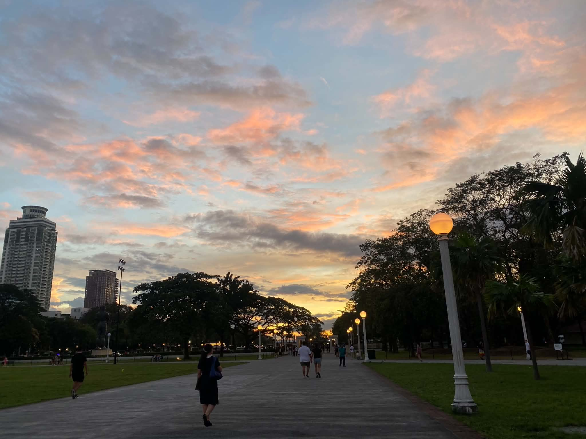
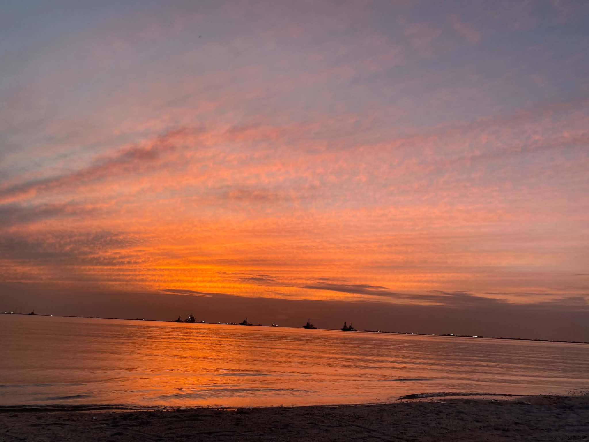
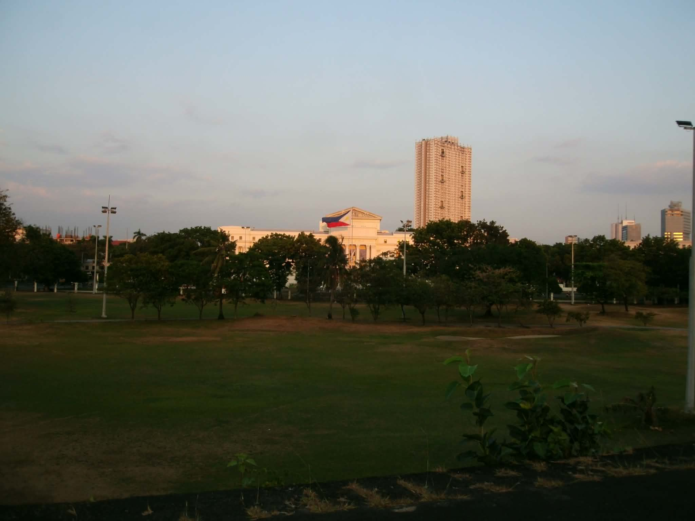

Tambayan for TUPians
A guide for TUP students looking for places to spend their vacant hours.
May A. Bugtong
Hi! I am a 2nd year student at TUP that enjoys exploring new places to spend long vacant hours near the campus.
My Places Guide
My Top 5 Most Visited Places
1. National Museum of the Philippines
In front of the Philippine National University
National Museum of the Philippines is great to visit for history and culture enthusiasts. And aside the museum itself, you can relax in the benches in front of it where you can clearly watch the sun set. However, it is not recommended on rainy days or under the scorching sun, especially at noon. You can also find vendors near this place that sells tuhog tuhog and even ice cream.

2. Rizal Park
Located near National Museum of the Philippines
Rizal Park is a popular recreational area in Manila, offering a peaceful retreat from the bustling city life. It's a great place for picnics and leisurely walks, and you can also enjoy the beautiful gardens and historical monuments within the park. The atmosphere is very peaceful even with the noises of the people around it.

3. Manila Baywalk Dolomite Beach
Located along the shores of Manila Bay
Manila Baywalk Dolomite Beach is a man-made beach that offers a unique experience for visitors. This place is perfect for watching sunsets but it closes at 6:00 pm for the safety of visitors. The smell of the sea is not quite tolerable but the view is what makes it tolerable. It is a nice place to relax have those deep talks with yours friends as well.

4. Intramuros
Near Pamantasan ng Lungsod ng Manila
Intramuros is a historic walled area within the city of Manila. It is home to several important landmarks, including Fort Santiago and San Agustin Church. Visitors can explore the cobblestone streets, learn about the history of the Philippines, and enjoy the unique architecture of the area. It is also a great place to relax and create memories with friends and this place also has mysteriously calming atmosphere despite being in this busy city.

5. Arrocerost Forest Park
Near the Unibersidad de Manila
Arrocerost Forest Park is a lush green space that offers a peaceful retreat from the urban environment. It is a great place for relaxation that offers a respite from the hustle and bustle of city life. The park can be enjoyed by those who loves the diversity of plants and trees. And for those who finds peace in watching how nature can be beautiful just by staring and capturing it just like what i do.